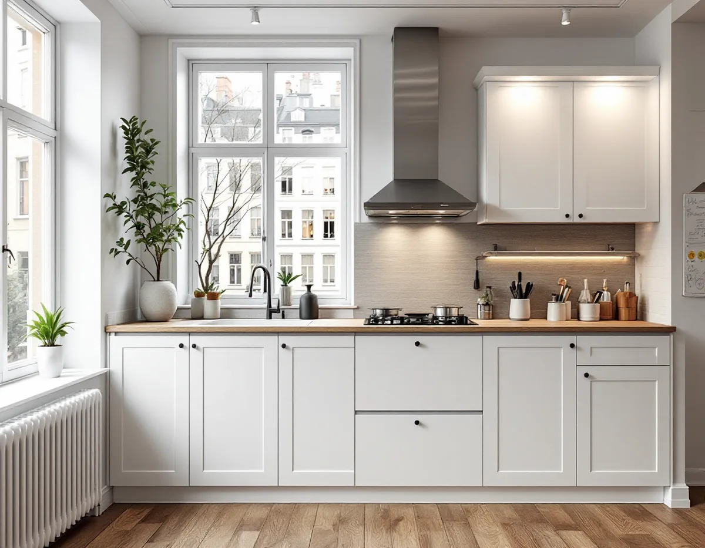
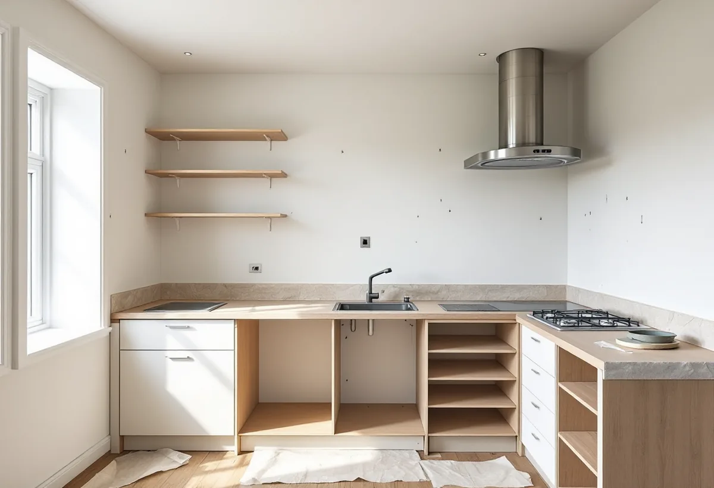
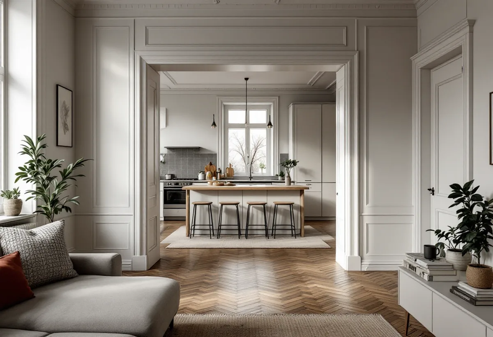

Platsbesök
Gratis besök där vi mäter köket och tittar på kanal och ledningar.
På Kungsholmen bor de flesta i bostadsrätt i flerbostadshus, och då handlar ett nytt kök lika mycket om fläkten, kanalen och föreningen som om luckorna. Geal Entreprenad AB planerar köket med dig, tar fram underlaget till styrelsen och bygger det färdigt.

Stadens områdesfakta för 2025 räknar 44 554 bostäder i Kungsholmens stadsdelsområde. 30 369 av dem är bostadsrätter i flerbostadshus, 10 476 är övriga hyresrätter och 1 510 hör till allmännyttan. Bara några hundra är småhus. För de allra flesta som vill renovera köket är alltså bostadsrättsföreningen den första instansen.
Bostadsrättslagen säger att du inte får göra vissa åtgärder i lägenheten utan styrelsens tillstånd: ingrepp i bärande konstruktion, installation eller ändring av ledningar för avlopp, värme, gas eller vatten, installation eller ändring av ventilation, ändring av eldstad eller rökkanal och annan väsentlig förändring. Ett kök där diskbänken flyttas eller fläkten byts mot en annan typ hamnar oftast på den listan.

Stockholms stad påpekar att ett kök behöver tillräcklig frånluft och ska uppfylla kraven för imkanal. Om badrummets frånluftskanal ska användas som kombinerad kanal för både kök och badrum måste kanalens sammanlagda mått räcka. Staden rekommenderar att man rådgör tidigt med sotaren om förutsättningarna för en ny eller ändrad ventilations- eller imkanal.
I ett flerbostadshus är ventilationen gemensam, och en kraftigare fläkt kan störa luftflödena i grannarnas lägenheter. Vi tar därför reda på vilket system huset har – självdrag, mekanisk frånluft eller från- och tilluft – innan vi föreslår fläkt. Ska ventilationen ändras väsentligt, till exempel med ett nytt aggregat eller nya kanaler, behövs en anmälan och ett startbesked.
Staden skriver att det inte behövs bygglov för att flytta ett kök. Däremot behövs anmälan och startbesked om flytten innebär ändring av bärande konstruktion eller brandskydd, väsentlig ändring av ventilationen eller en ny VA-stam i ett nytt schakt. Oavsett om anmälan krävs ska arbetet uppfylla de tekniska egenskapskraven i plan- och bygglagen.
Många kök på Kungsholmen öppnas mot vardagsrummet. Är väggen bärande blir det både en anmälan till staden och en fråga för styrelsen. Vi tar fram ritningar och konstruktionsunderlag och lämnar in dem innan väggen rörs. Hur badrummet i samma lägenhet hanteras beskriver vi under badrumsrenovering på Kungsholmen.
Staden skriver att den som bor i hyresrätt normalt inte får flytta kök eller badrum. Ett nytt kök i en hyreslägenhet är fastighetsägarens beslut, och då är det hyresvärden som beställer arbetet. I en bostadsrätt kan styrelsen bara vägra tillstånd om åtgärden är till påtaglig skada eller olägenhet för föreningen, och den som är missnöjd med beslutet kan begära att hyresnämnden prövar saken.
För att styrelsen ska kunna svara snabbt behöver den en tydlig beskrivning: vad som ska göras, var ledningar och fläkt hamnar och vem som utför arbetet. Vi skriver den beskrivningen och bifogar ritningar. Många föreningar vill också ha intyg och dokumentation från el- och VVS-arbetena när köket är klart, så att det finns underlag om något händer senare i huset. Vi samlar dem och lämnar över dem till dig och styrelsen. Läs mer om helheten under köksrenovering.

Gratis besök där vi mäter köket och tittar på kanal och ledningar.
Planlösning, fläkt och placering av diskbänk och vitvaror.
Underlag till styrelsen för tillstånd enligt bostadsrättslagen.
Anmälan till staden där bärande delar, ventilation eller ny stam berörs.
Rivning, el och VVS via behöriga installatörer, montering av köket.
Genomgång av köket och dokumentation till föreningen.
Skatteverket godkänner rotavdrag i en bostadsrätt för arbete inne i lägenheten som du själv ansvarar för enligt föreningens stadgar – till exempel att montera fast köksinredning och installera vitvaror i samband med en omfattande renovering, byta köksluckor eller riva innerväggar. Avdraget gäller arbetskostnaden, och Geal drar det direkt på fakturan.
Om köket stannar på samma plats eller flyttas, om en vägg öppnas, fläkt och kanal, el och VVS, inredning och vitvaror samt hur material kommer upp i trapphuset. Efter ett gratis platsbesök får du ett skriftligt kostnadsförslag.
Planering, el, VVS, fläkt och väggar.
Köksrenovering i Stockholm →Stambyte, stämmobeslut och 30-talshus.
Badrumsrenovering på Kungsholmen →Föreningens stambyte.
Byggföretag på Kungsholmen →Slätputs på funkishus, lagad utan synliga skarvar.
Fasadrenovering på Kungsholmen →Stenhusen, funkishusen och bygglovet.
Fönsterbyte på Kungsholmen →Fönstret i bostadsrätten, insida och beslag.
Fönsterrenovering på Kungsholmen →Stegljud, golvval och styrelsens tillstånd.
Golvläggare på Kungsholmen →Slipa och lacka golvet i bostadsrätten.
Golvslipning på Kungsholmen →Funkislägenheter, stadgar och ROT i bostadsrätten.
Målare på Kungsholmen →Huvar, skorstenar och genomföringar.
Plåtslagare på Kungsholmen →Villorna på Stora Essingen.
Takbyte på Kungsholmen →Ny tapet på putsade lägenhetsväggar.
Tapetsering på Kungsholmen →Hela lägenheten från golv till tak.
Totalrenovering på Kungsholmen →